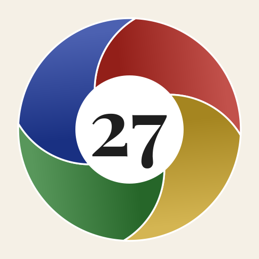

2027 Planning Wheel
Opening the staff planning wheel…
Open the planning wheelSign in with your @crbclawrenceville.org Google account if asked.

Opening the staff planning wheel…
Open the planning wheelSign in with your @crbclawrenceville.org Google account if asked.